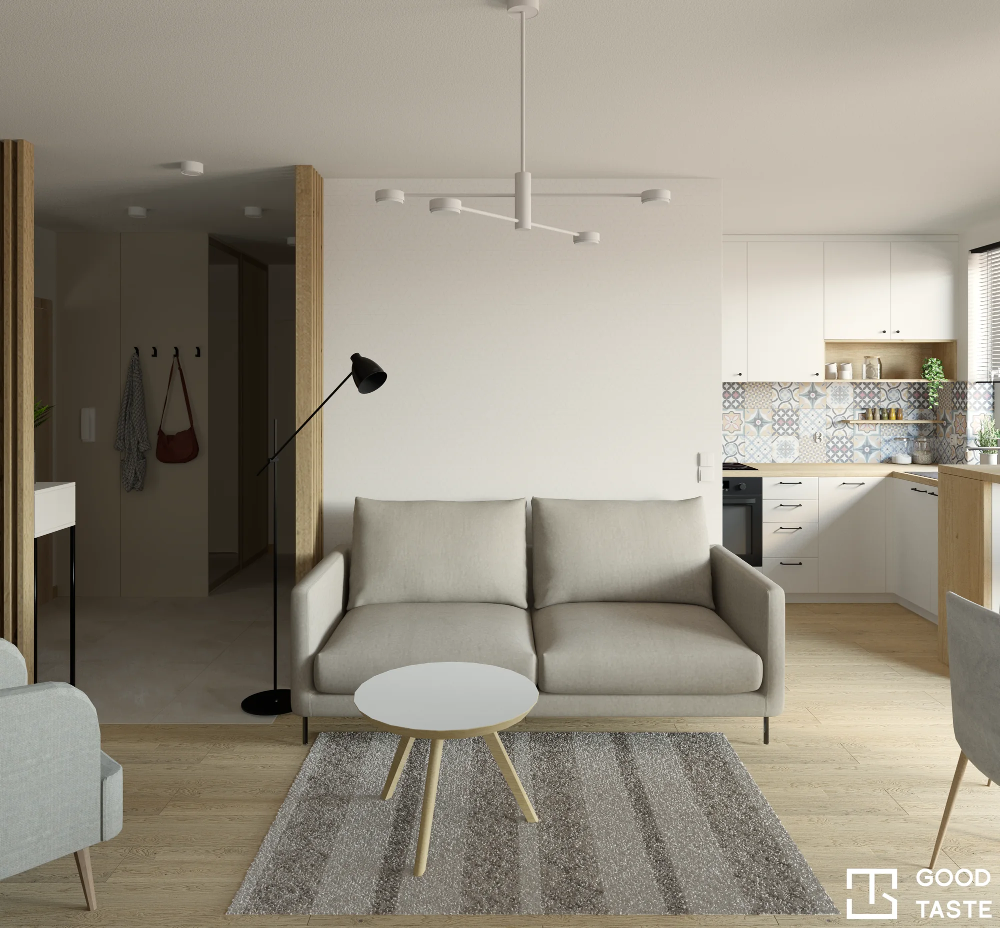
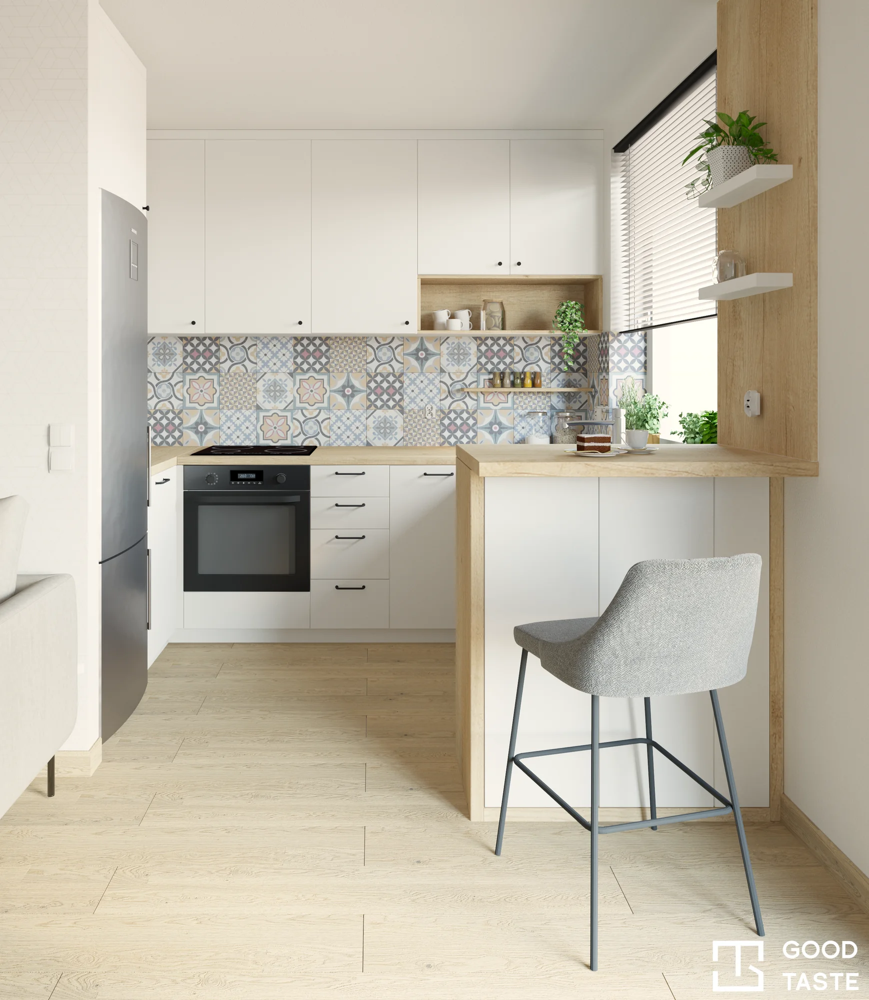
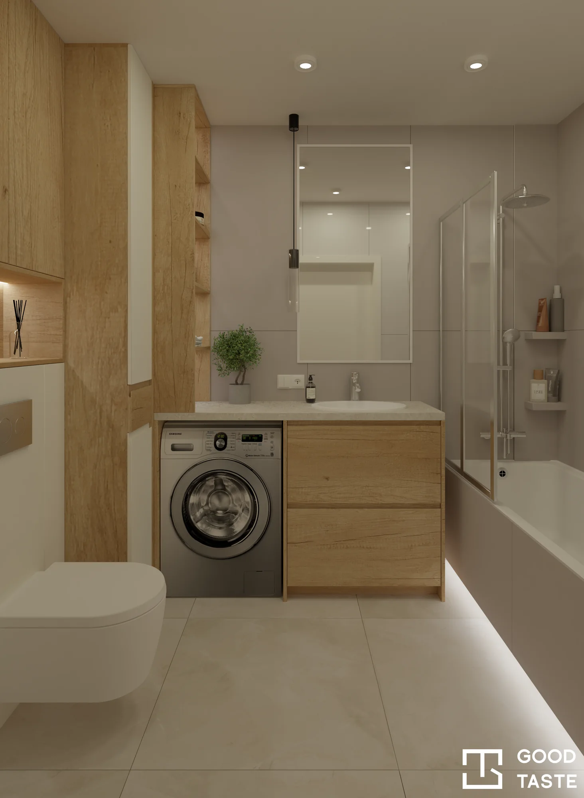
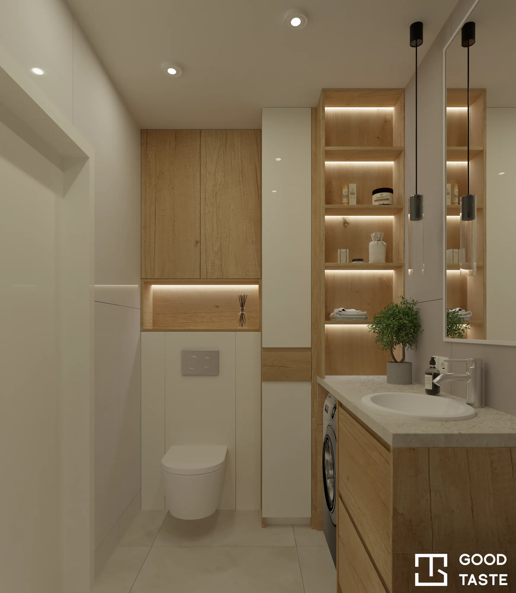

Mieszkanie Zielna
Drewno, biel i mała skala
Projekt mieszkania przy Zielnej wykorzystuje jasną paletę i drewniane akcenty. Salon połączono z kuchnią, w której wzorzyste płytki urozmaicają spokojną zabudowę. Niewielki blat przy oknie tworzy miejsce do jedzenia. W łazience pokazano wannę, pralkę pod blatem i podświetlane półki.
Porozmawiajmy o Twoim projekcie



Poznaj pozostałe projekty
Projektowanie wnętrz — zobacz portfolio i dowiedz się więcej o współpracy.
Wrocław i Dolny Śląsk
Kontakt
Porozmawiajmy o Twoim projekcie. Podaj miejscowość, metraż i planowany termin.
Napisz do nasAdres e-mail wkrótce
ZadzwońNumer telefonu wkrótce
Obserwuj nasFacebook — wkrótce